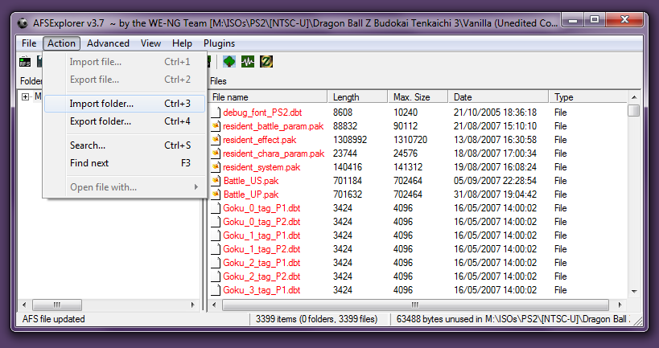
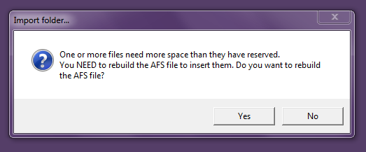
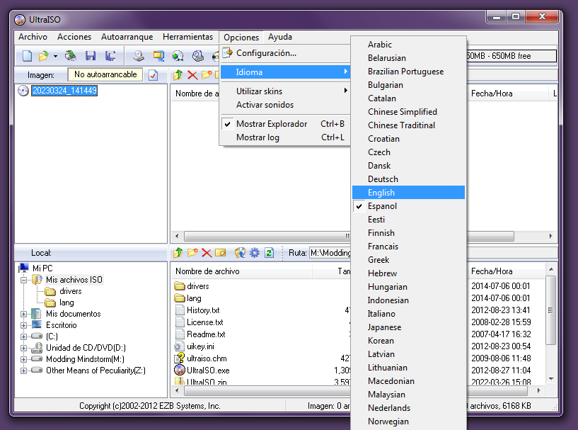
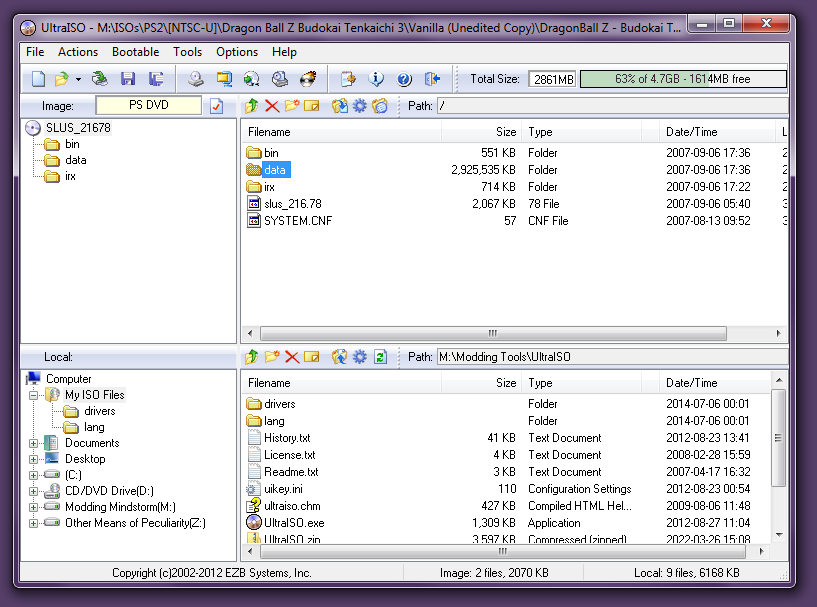

Old AFLs
-
PZS3US1.AFLPZS3US2.AFL
-
(file lists for NTSC-U ver. of Tenkaichi 3)
-
There are no other AFLs besides these.
That's because they were made at a time
where modders relied on the NTSC-U ver,
without caring which files were which,
hence the obfuscated (.unk) file names.
DISCLAIMER: Up until my Sparking of the Dawn modpack, all the mods before it use the file names from the old AFLs out of pure convenience. Guilty as charged.
Otherwise, everything else I've made now includes its own set of instructions (since each mod is different), similar to what this guide provides.
Step 1: Open AFS Explorer, and go to File -> Import AFS file from CD image...

Step 2: Choose a Budokai Tenkaichi 3 disc image, preferably an unedited copy.

Step 3: After clicking Open, you should get a tree view of the ISO's contents.
Double-click the DATA folder, select PZS3XX1.AFS and click OK.

XX represents the region of the ISO. Replace it with one of the following acronyms:
- US (for the NTSC-U / American English version)
- JP (for the NTSC-J / Japanese version)
- EU (for the PAL / European version)
Step 4: Once the AFS file is loaded, go to Advanced -> Import file name list...

Step 5: Before doing anything else, make sure to check the file extensions of the mods you want to install.
If set to UNK, refer to the old AFLs above. Otherwise, refer to the new ones.

Step 6: To assure these new file names stay even after closing AFS Explorer, go to File -> Update and click Save.

Step 7: After the AFS updates, go to Action -> Import Folder... and choose the folder with the same name as PZS3XX1.AFS,
or at the very least, a folder that contains acceptable UNK/PAK files (meaning that file names MUST match with what is in the AFS).

Please note that AFS Explorer will not detect files stored in subfolders, so you have to put everything in one folder.
Step 8: Unless there are no file size changes whatsoever, AFS Explorer will ask you the following question:

The answer to that is always yes, so click Yes and save the destination AFS as PZS3XX1.AFS.
Step 9: Let AFS Explorer take its sweet time, until it displays this message:

At this stage, there are two options regarding how the new AFS will be inserted into the ISO:
- If you click Yes, then wait for the new AFS to load, and go to File -> Insert AFS file into CD image...
- This way, you won't have to download UltraISO or ImgBurn, as AFS Explorer will slowly rebuild the ISO for you.
- If you click No, close the program immediately, and use either UltraISO or ImgBurn to handle the rebuilding process.
- This approach is recommended if the mod in question only changes one AFS instead of both.
- Otherwise, you'll have to reopen AFS Explorer and repeat steps 1-9 for PZS3XX2.AFS as well.
Step 10: Open UltraISO, go to Options -> Language and change it to your native language (or English) for the sake of preventing confusion.

Step 11: From there, open the ISO by going to File -> Open..., and double-click the data folder.

Step 12: Drag-and-drop the new AFS file(s) like so, and save the changes using the CTRL+S shortcut.


If the steps have been followed correctly, you should have the mod installed and ready to be played with! Congratulations!

 UltraISO
UltraISO